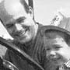
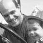

|
Literary Kicks |
|

|
|
Immerse yourself in the LitKicks Freestyle Writing Workshop, a friendly and intensive online writing encounter. You will be placed in a small group with approximately ten other poets, writers, playwrights or essayists. Three writing assignments will be issued, and you and the other members of your group will work together to review and critique each other's writings. The workshop is structured to provoke new ideas and help you break through writer's block. No previous experience or credentials are required! The next Freestyle Writier's Workshop begins on Monday, November 17, 2003 and ends on December 31, 2003. Would you like to sign up now or find out more?  Please meet the six outstanding writers who emerged from our last workshop, The QUEST. These writers were chosen from among 114 participants, along with five honorable mentions. Please check out Morning Talk Belief, a sampling of writings by these writers and a few other selected pieces from The QUEST: 
 



Writing workshops are an exciting new frontier at LitKicks and we hope you'll give them a try. You may be surprised what you find out about yourself as a writer. |